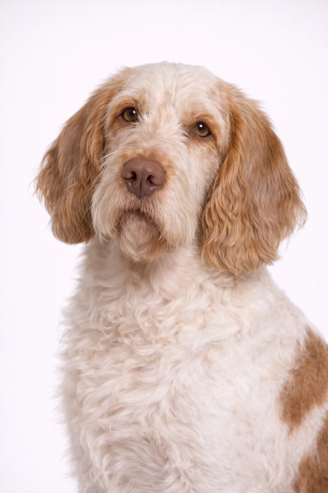

Spinone Italiano
Un docile, amichevole grande razza che è un meraviglioso compagno.
23-28 in
64-86 lbs
Valutazioni della Razza
Temperamento
Panoramica
Antica razza italiana, lo Spinone è una delle razze da ferma più dolci e pazienti. Il mantello ruvido e l'espressione profonda sono caratteristici.
Temperamento
Lo Spinone Italiano è noto per essere docile, amichevole e paziente. Sono eccellenti con i bambini e meravigliosi animali domestici. Una socializzazione precoce li aiuta a svilupparsi in compagni equilibrati.
Salute
Generalmente sano con un'aspettativa di vita di 10-12 anni. Le preoccupazioni comuni includono displasia dell'anca e torsione gastrica. Controlli veterinari regolari e cure preventive sono importanti. Mantenere un peso sano aiuta a prevenire molti problemi di salute.
Esercizio
Necessità di esercizio moderate con passeggiate quotidiane e sessioni di gioco regolari. Apprezzano un mix di attività fisica e tempo di relax. Giochi interattivi e sessioni di addestramento forniscono stimolazione mentale. Una routine di esercizio costante li mantiene sani e felici.
⦿ Questa Razza è Adatta a Te?
✓ Ideale Per
- Famiglie con bambini
- Chi cerca un gigante gentile
- Addestratori pazienti
✗ Non Ideale Per
- Chi cerca un cane dal ritmo veloce
- Maniaci della pulizia (sbavano)
Il Nostro Verdetto: Antica razza italiana, lo Spinone è una delle razze da ferma più dolci e pazienti. Il mantello ruvido e l'espressione profonda sono caratteristici.